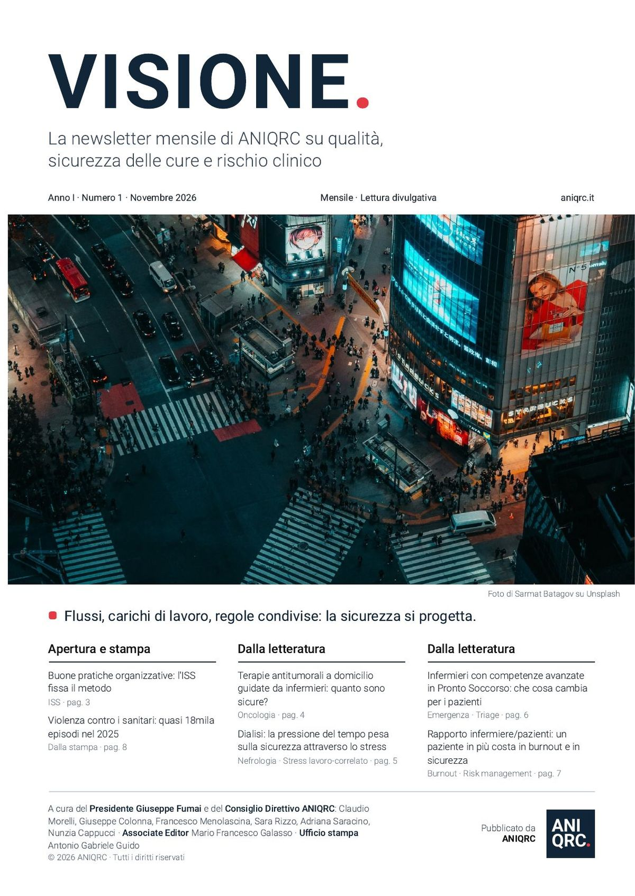

VISIONE
La newsletter mensile di ANIQRC su qualità, sicurezza delle cure e rischio clinico.
Flussi, carichi di lavoro, regole condivise: la sicurezza si progetta.
Foto di Sarmat Batagov su Unsplash
Ogni mese, sei letture per chi governa la qualità.
VISIONE seleziona ogni mese ciò che conta per chi lavora su qualità, sicurezza delle cure e rischio clinico in nefrologia, oncologia, emergenza, riabilitazione e organizzazione del lavoro, e lo legge in chiave organizzativa: procedure, ruoli, indicatori.
Una notizia istituzionale
Linee guida, raccomandazioni e buone pratiche dall’Istituto Superiore di Sanità e dalle istituzioni sanitarie.
Quattro lavori scientifici
Studi indicizzati su PubMed, sintetizzati in modo semplice, con una lettura critica e le ricadute organizzative.
Un articolo dalla stampa
Una notizia dei quotidiani sul mondo della sanità, con testata, autore, data e collegamento all’originale.
Come leggiamo i lavori. Per ogni lavoro la redazione scrive una sintesi divulgativa con una lettura critica e le possibili ricadute organizzative. Non riproduciamo abstract né testi degli articoli: sotto ogni contributo sono indicati autori, rivista, DOI e PMID, a cui rimandiamo per la lettura integrale.
Leggi qui, pagina per pagina.

Usa le frecce della tastiera o scorri col dito per cambiare pagina.
Chi cura VISIONE.
A cura del Presidente e del Consiglio Direttivo di ANIQRC, con l’Associate Editor e l’Ufficio stampa dell’associazione.
I numeri.
© 2026 ANIQRC – Associazione Nazionale Infermieri Qualità e Rischio Clinico, Via Napoli 369/Q, 70132 Bari. Tutti i diritti riservati: la consultazione e il download sono per uso personale; non è consentito riprodurre, modificare o ridistribuire la pubblicazione senza autorizzazione scritta di ANIQRC (L. 633/1941). Restano dei rispettivi titolari i diritti sugli articoli scientifici, giornalistici e sulle fotografie citati.
Le sintesi hanno finalità divulgative e non costituiscono indicazioni cliniche. Copertina del N. 1: foto di Sarmat Batagov su Unsplash. Vuoi ricevere VISIONE via e-mail? Iscriviti alla newsletter o associati ad ANIQRC.